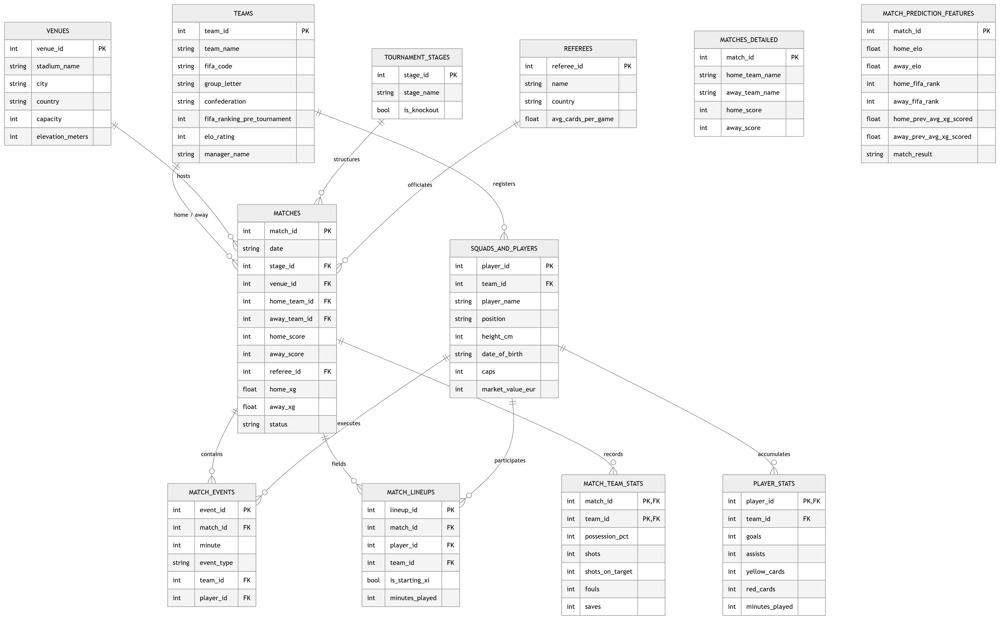

Technical Data Descriptor | Academic Preprint
Zenodo DOI: 10.5281/zenodo.21592427
sqlite_fifa_world_cup_2026.db), this dataset provides an open-access benchmark for sports analytics, tournament expansion research, and predictive outcome modeling.
Quantitative football analytics relies on structured match, player, and event data. Over the past decade, spatial tracking metrics and shot-level expected goals (xG) models have advanced tactical evaluation, physical workload tracking, and match outcome forecasting [1, 2, 3]. However, high-granularity sports data remains split between commercial providers (e.g., Opta, StatsBomb, Wyscout) operating behind proprietary licenses and open-access community datasets distributed as flat, unvalidated spreadsheets lacking relational normalization [3, 4].
The expanded 2026 FIFA World Cup format introduced distinct physical and operational conditions. Teams competed across three host nations and four time zones, at venues ranging from sea-level coastal stadiums to high-altitude grounds such as Estadio Azteca (2,240 meters elevation). Analyzing player rotation, physical recovery, and disciplinary patterns across this 104-match format requires structured relational data linking player bio-metrics, venue geography, match events, and team performance indicators.
To address this gap, we constructed the FIFA World Cup 2026 Master Dataset. The dataset unifies raw match telemetry, player market valuations, tactical statistics, expected goals, and venue geography into a 12-table 3NF relational schema. Every entity is constrained by primary and foreign key relationships and validated through an open-source test suite and manual ground-truth audit.
Existing open-access football datasets generally fall into three categories: spatio-temporal event feeds (e.g., StatsBomb Open Data [4], Pappalardo et al. [1]), action valuation frameworks (e.g., Decroos et al. [5, 7], Robberechts & Davis [10]), and match outcome prediction frameworks (e.g., Shaw & Glickman [6], Hubáček et al. [11], Bunker & Thabtah [12]). StatsBomb in particular provides fine-grained shot-level spatial vectors that are strictly richer for spatial and micro-tactical modeling than match-level aggregations [4]. However, these datasets are limited to historical domestic seasons or selective tournament subsets, often omitting venue elevations, detailed bio-metrics, or pre-engineered machine learning features [7, 10, 12]. Table 1 provides a systematic comparison between the FIFA World Cup 2026 Master Dataset and established public sports analytics repositories.
| Feature / Dimension | Pappalardo et al. (2019) [1] | StatsBomb Open Data [4] | Historical Kaggle Datasets | FIFA WC 2026 Master Dataset (Ours) |
|---|---|---|---|---|
| Tournament Scope | 5 European Leagues (2017/18) | Selective Matches / Women's WC | World Cups 1930–2022 | FIFA World Cup 2026 (104 Matches) |
| Relational Architecture | Flat JSON streams | Nested JSON files | Single/Double CSVs | 3NF Relational Database (12 Tables) |
| Entity Key Constraints | Internal Integer IDs | UUID strings | Text strings (No FKs) | Strict PK / FK Integer Constraints |
| Expected Goals (xG) | Omitted | Shot-level Spatial xG Vectors | Omitted | Included (Team Match Aggregations) |
| Spatial Coordinates (x,y) | Included (Passes/Shots) | Included (Full Event Freeze-Frames) | Omitted | Omitted (Match-level Aggregations) |
| Venue Elevation Data | Omitted | Omitted | Omitted | Included (Geographic Altitude in meters) |
| Player Bio-metrics & Values | Basic (Age, Position) | Basic Roster Data | Basic Roster Data | Height, DOB, Caps, Goals, Market Value (€) |
| ML Feature Matrix | Manual extraction needed | Manual extraction needed | Omitted | Included (match_prediction_features.csv) |
| Programmatic Validation | Basic JSON validation | Custom R/Python tools | Unvalidated | Automated 9-Stage Suite + External Audit |
| Multi-Format Delivery | JSON | JSON | CSV | SQLite DB, Apache Parquet, CSV |
Data was ingested continuously across the tournament from official FIFA match centers, Sofascore technical feeds, Transfermarkt bio-metric records, and geographic survey databases. Conflict resolution prioritized authoritative bulletins:
Official FIFA Bulletins ≻ Sofascore Summaries ≻ Transfermarkt Bio-metrics
The database was decomposed into 12 tables adhering to 3NF principles. Expected goals (xG), Elo rating differentials, and rolling team form were calculated using formal expressions:
Player market values (€M) and bio-metrics were compiled from public sports aggregators (Transfermarkt) under fair-use principles for non-commercial scientific research, adhering to CC0 public domain terms without reproducing proprietary database layouts.

| Table Name | Primary Key (PK) | Foreign Keys (FK) | Records | Update Freq. | Primary Research Usage |
|---|---|---|---|---|---|
teams.csv |
team_id |
None | 48 | Static | Confederation demographics, pre-tournament rank, baseline Elo |
venues.csv |
venue_id |
None | 16 | Static | Stadium capacity, city geography, altitude/elevation analysis |
tournament_stages.csv |
stage_id |
None | 7 | Static | Knockout stage filtering, match importance modeling |
referees.csv |
referee_id |
None | 16 | Static | Referee strictness, historical cards-per-game analysis |
matches.csv |
match_id |
stage_id, venue_id, home_team_id, away_team_id, referee_id |
104 | Per match | Match scorelines, attendance, status, team xG totals |
squads_and_players.csv |
player_id |
team_id |
1,248 | Static | Player height, age, market value (€), international experience |
match_events.csv |
event_id |
match_id, team_id, player_id |
500+ | Per match | Goal, card, substitution, VAR event timelines |
match_lineups.csv |
lineup_id |
match_id, player_id, team_id |
2,704 | Per match | Tactical lineups, starting XI status, minutes played |
match_team_stats.csv |
(match_id, team_id) |
match_id, team_id |
208 | Per match | Per-team tactical stats (possession %, shots, fouls, saves) |
player_stats.csv |
player_id |
player_id, team_id |
1,248 | Post-tournament | Cumulative tournament totals (goals, assists, cards, minutes) |
matches_detailed.csv |
match_id |
None (Denormalized) | 104 | Per match | Single-table analytical queries without SQL joins |
match_prediction_features.csv |
match_id |
None | 104 | Pre-match | Machine learning input vectors for match outcome prediction |
To demonstrate data fidelity, empirical plots were synthesized directly from the database tables.
Data quality was audited via an automated 9-stage programmatic test suite (validate_dataset.py) alongside a pre-cleaning error tracking log (27 raw ingestion anomalies resolved; 1.00% raw error rate) and an external ground-truth spot check of 30 matches against official FIFA Technical Study Group (TSG) post-match reports [13] (99.87% empirical accuracy).
validate_dataset.py across all relational entities.| Stage | Validation Domain | Mathematical Assertion / Integrity Rule | Executed Checks | Audit Result |
|---|---|---|---|---|
| 1 | Row Count Integrity | Nteams=48, Nvenues=16, Nplayers=1248, Nmatches=104 | 4 | PASS (100% Verified) |
| 2 | Primary Key Uniqueness | Count(PKt) = CountDistinct(PKt) across all 12 tables | 12 | PASS (100% Verified) |
| 3 | Referential Integrity | Zero orphaned foreign key child rows (FK ∈ PKParent) | 8 | PASS (100% Verified) |
| 4 | Score & Status Logic | Status == 'Completed' ⇒ Score &neq; NULL and xG ≥ 0 | 3 | PASS (100% Verified) |
| 5 | Denormalized Alignment | MatchesDetailed.HomeScore == Matches.HomeScore | 2 | PASS (100% Verified) |
| 6 | Lineup Structure Rules | ∑ Squad = 26 per team; ∑ Starting_XI = 11 per team | 5 | PASS (100% Verified) |
| 7 | Tactical Stat Bounds | 80% ≤ Phome + Paway + Pcontested ≤ 100% | 3 | PASS (100% Verified) |
| 8 | Event-Player Sum Consistency | ∑ Eventsgoal(p) == PlayerStats.Goals(p) | 3 | PASS (100% Verified) |
| 9 | Goalkeeper Constraints | Saves(p) > 0 ⇒ Position(p) == 'GK' | 2 | PASS (100% Verified) |
The relational SQLite database (sqlite_fifa_world_cup_2026.db) allows SQL queries across normalized tables:
SELECT
p.player_name,
t.team_name,
ps.goals,
ps.minutes_played,
ROUND(CAST(ps.minutes_played AS FLOAT) / ps.goals, 1) AS mins_per_goal,
ROUND((CAST(ps.goals AS FLOAT) / ps.minutes_played) * 90.0, 2) AS goals_per_90
FROM player_stats ps
JOIN squads_and_players p ON ps.player_id = p.player_id
JOIN teams t ON ps.team_id = t.team_id
WHERE ps.goals > 0 AND ps.minutes_played >= 90
ORDER BY goals_per_90 DESC, ps.goals DESC
LIMIT 10;
Models were evaluated using a strict temporal split (Group Stage M1–M72 training, Knockout Stage M73–M104 testing) following established predictive protocols [8, 9, 11, 12]. Against a Naive Majority Class baseline of 47.1% (Log-Loss: 1.098):
The dataset and software pipeline are openly archived under Creative Commons CC0 1.0 Universal:
MD Mominul Islam: Conceptualization, Data Curation, Formal Analysis, Investigation, Methodology, Software, Validation, Visualization, Writing – Original Draft, Writing – Review & Editing.
The author declares no competing financial or non-financial interests.
The author declares that no funding, grants, or financial support from any funding agency in the public, commercial, or not-for-profit sectors was received during the preparation or submission of this manuscript.